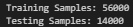

What is a Decision Tree?
A Decision Tree is a supervised learning algorithm used for both classification and regression tasks. It works by recursively splitting the dataset into smaller subsets based on specific feature conditions that lead to the most optimal separation of classes. The model forms a flowchart-like structure that is both visual and interpretable.

Structure of a Decision Tree
- Root Node: The starting point of the tree, where the first feature is chosen to split the dataset.
- Internal Nodes: Represent conditions or decisions based on feature values (e.g., Is Blood Glucose > 140?).
- Leaf Nodes: Final outputs or class predictions (e.g., "High Diabetes Risk").
How Does It Make Predictions?
The model is trained by evaluating all features and selecting the best one to split on, based on how well it separates the target classes. The process continues recursively, building a tree where each path from root to leaf represents a decision rule. To make a prediction, the model follows the feature values of a new instance through the tree until it reaches a leaf node.
How Does It Choose Splits? (Gini, Entropy, and Information Gain)
- Gini Index: Measures the impurity of a node. A Gini score of 0 means all elements belong to a single class. The algorithm prefers features that result in child nodes with low Gini impurity.
- Entropy: A measure from information theory that quantifies the randomness (or disorder) in a set. High entropy indicates more mixed classes. The goal is to reduce entropy with each split.
- Information Gain: Calculated as the reduction in entropy after a split. Features with higher information gain are more useful for classification and are therefore chosen earlier in the tree.
During training, Decision Trees compare the reduction in Gini or Entropy for every possible split and choose the one that maximizes purity or minimizes uncertainty. These mathematical metrics ensure that each branch leads to more homogeneous subgroups.
In this project, both Gini and Entropy were used to train trees with different settings, and the performance was compared to identify the best combination of features and criteria.
GitHub Repository
View Decision Tree Code on GitHub ↗Dataset Used
We used the cleaned diabetes dataset for all Decision Tree models.
 Download Cleaned Dataset
Download Cleaned Dataset
Data Preprocessing
Steps applied before training the models:
- Loaded cleaned dataset

- Encoded categorical features

- Separated features and target variables
- Train-test split (80/20)
Training Data Preview
Sample of the training data used to train the model:
 Download Training Sample CSV
Download Training Sample CSV
Testing Data Preview
Sample of the testing data used to evaluate model accuracy:
 Download Testing Sample CSV
Download Testing Sample CSV
Dataset Summary
Total number of train & test samples in the dataset:

Decision Tree Models
Default Decision Tree (Without Tuning)
This model was trained using basic/default parameters.
- No maximum depth or splitting constraints were applied.
- Multiple root features were tested: Blood Glucose, Weight Gain, and Age.
Overall Accuracy: 54.5%
Root: Blood Glucose

Root: Weight Gain

Root: Age

Tuned Decision Tree (GridSearchCV)
Hyperparameter tuning significantly improved the model performance.
- Best Parameters: max_depth=6, min_samples_split=4, criterion='entropy'
- Overall Accuracy: 88.7%
- Roots tried: Genetic Markers, Autoantibodies, Family History
Root: Genetic Markers

Root: Autoantibodies

Root: Family History

Model Performance Comparison
Performance metrics for both default and tuned models across different roots:
| Model | Accuracy | F1 Macro | F1 Weighted |
|---|---|---|---|
| Default Tree | 54.5% | 0.47 | 0.47 |
| Tuned Tree | 88.7% | 0.89 | 0.89 |
Confusion Matrices
Default Trees


Tuned Trees


Results and Conclusion
Summary of Decision Tree Performance
We implemented and compared two types of Decision Tree models to classify diabetes risk levels based on patient data:
- Default Decision Tree: Trained without tuning, using features like Blood Glucose, Weight Gain During Pregnancy, and Age as root nodes.
- Tuned Decision Tree: Trained using GridSearchCV to optimize hyperparameters (e.g.,
max_depth=6,criterion='entropy',min_samples_split=4) with key root features like Genetic Markers, Autoantibodies, and Family History.
Default Trees produced only moderate performance due to their basic structure:
- Accuracy: 54.5%
- F1 Macro: 0.47
- F1 Weighted: 0.47
These models captured some classes well (e.g., Class 4 and 12), but performed poorly on others like Class 1 and 9. Their simplicity often led to underfitting.
Tuned Trees significantly improved classification performance:
- Accuracy: 88.7%
- F1 Macro: 0.89
- F1 Weighted: 0.89
By limiting tree depth and adjusting split criteria, tuned trees provided more generalizable and accurate predictions across all 13 diabetes categories.
Visual Insights
- Confusion matrices showed the tuned models had far fewer misclassifications and clearer diagonal dominance.
- The tuned tree rooted in Genetic Markers slightly outperformed trees rooted in Autoantibodies and Family History.
- Default trees, though interpretable, suffered from incorrect predictions due to uncontrolled depth and overfitting on irrelevant splits.
What We Learned (Technical)
- Decision Trees are inherently interpretable—every split reflects a rule that can be visualized and explained.
- Gini Index and Entropy were tested for split criteria; entropy (used in tuning) measures information gain more granularly, leading to better splits.
- Information Gain helped the model select features that maximized class purity after each split.
- Hyperparameter tuning is essential. Without constraints, decision trees tend to overfit, especially in high-dimensional datasets like healthcare records.
What We Learned (Non-Technical)
In simple terms, when the model was left to make decisions on its own (default tree), it didn’t always choose the best questions. But when we helped guide its behavior (tuned tree), it became much smarter at spotting patterns in patient data. Features like genetic history and biomarkers turned out to be more helpful than others, and the model could now predict a patient’s diabetes risk more accurately. This means healthcare professionals could trust these predictions more for patient assessment.
Final Takeaways
Decision Trees provide a balance of simplicity and effectiveness, especially when combined with tuning. Our analysis showed that:
- Tuning the Decision Tree model boosted accuracy from 54.5% to 88.7%.
- Choosing the right root feature (e.g., Genetic Markers) contributed to better early splits and more accurate outcomes.
- With visual interpretability, clinicians can understand why a prediction was made—critical for transparent AI in healthcare.
This study highlights the importance of optimizing even simple algorithms to unlock their full potential—making them useful, trustworthy, and insightful for healthcare analytics.